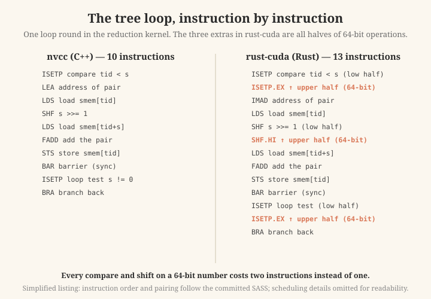
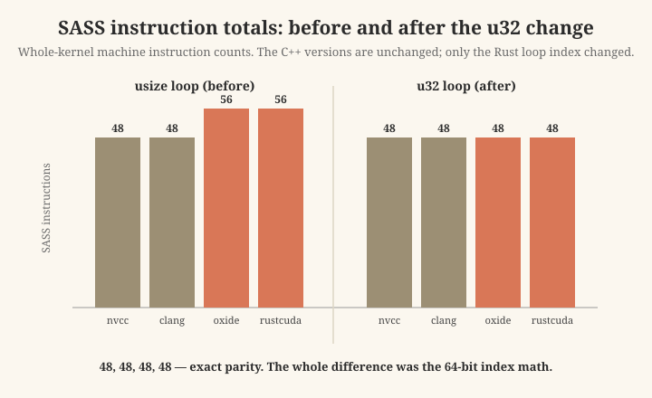
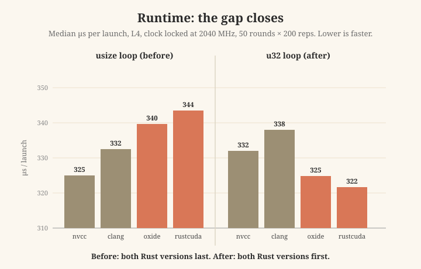

The short version
- In my previous post I compared four GPU compilers on the same kernels: two Rust compilers (cuda-oxide, rust-cuda) and two C++ compilers (clang, nvcc).
- On the compute-heavy reduction kernel, both C++ versions were about 3 to 5 percent faster than both Rust versions. I said, honestly, that I did not know the cause.
- This post finds the cause. It was not "Rust". It was not the compiler backend. It was one small thing: the loop counter was 64-bit in Rust and 32-bit in C++.
- I changed three lines in each Rust kernel — the loop counter type from
usizetou32— and the gap disappeared completely. The Rust versions now run at the same speed as nvcc. - The practical lesson for anyone writing GPU kernels in Rust: keep the index of a hot loop 32-bit. Use
u32for the loop, and convert tousizeonly at the memory access.
Where this comes from
My previous post ended with an open question. The reduction kernel (a shared-memory tree sum) was the one place where the four compilers did not run at the same speed. With a locked GPU clock and many repeats, the two C++ versions were always ahead by 3 to 5 percent, and the two Rust versions were always behind, together.
I could see the pattern but not the cause. It lined up with the language (both C++ ahead, both Rust behind). But I did not want to publish "Rust is slower" without knowing why. So I wrote "cause not established" and left it open.
This post closes that question. The method has four steps: read the machine code, form a hypothesis, change one thing, and measure again.
Step 1: read the machine code
The GPU does not run PTX directly. PTX is assembled into SASS — the real machine instructions. I had the SASS of all four reduction versions already saved in the repo, so I compared the fastest (nvcc) against the slowest (rust-cuda), loop against loop.
The reduction kernel spends its time in one small loop: the "tree" that repeatedly halves a stride value and adds pairs of numbers in shared memory. In that loop:
- nvcc: 10 instructions per loop round. All the index math is 32-bit.
- rust-cuda: 13 instructions per loop round. The three extra instructions are all the same kind: they are the upper halves of 64-bit operations. One extra compare, one extra shift, one extra loop test.
Here is the key idea, said simply: the GPU works on 32-bit numbers natively. A compare or a shift on a 64-bit number costs two instructions instead of one — one for the lower half, one for the upper half. So a loop that does its counting in 64-bit pays roughly double for every compare and shift.

One round of the tree loop, instruction by instruction. The three extras in rust-cuda (orange) are the upper halves of 64-bit operations: a compare, a shift, and the loop test. The listing is simplified for readability; order and pairing follow the committed SASS.
I checked the other two compilers as a cross-check. cuda-oxide (the other Rust compiler) had the same extra 64-bit instructions in its loop. clang and nvcc (the two C++ compilers) had zero 64-bit operations in the whole kernel.
Step 2: the hypothesis
Why is the Rust loop 64-bit and the C++ loop 32-bit? Because of what each language makes natural to write.
In Rust, the natural type for indexes and lengths is usize, which is 64-bit on this platform. Both Rust kernels wrote the loop like this:
let mut s = (block_dim_x() / 2) as usize; // 64-bit
while s > 0 { ... s >>= 1; }In C++, the habitual loop counter is unsigned int, which is 32-bit:
for (unsigned int s = blockDim.x / 2; s > 0; s >>= 1) { ... }Same algorithm. Each version written in its own language's normal style. But one counts in 64-bit and the other in 32-bit.
The numbers also fit: 3 extra instructions, times 8 loop rounds (a block of 256 threads halves 8 times), inside a loop of roughly 80 to 100 instructions total — that is the right size for a 3 to 5 percent gap.
But "the instructions are there" is not proof that they cost time. GPUs are good at hiding small amounts of extra work. So the hypothesis needed a real test.
Step 3: the experiment — change one thing
I made a copy of both Rust kernels with one change: the loop counter stays u32 (32-bit) through the whole loop, and is converted to usize only at each memory access. That conversion at the access is free — it is what C++ does implicitly anyway. The change is three lines per kernel. Everything else is byte-identical.
Two details that make the experiment trustworthy:
- I left one 64-bit check in on purpose. The guard at the top of the kernel (
gid < input.len()) runs only once per thread, so it cannot explain a per-round loop cost. I kept it asusizeas a control. The prediction: the loop's 64-bit instructions disappear, and this one stays. If both disappeared, my edit would have changed more than I intended. - I wrote the prediction down before running anything. The 64-bit instruction count should drop to exactly the one control remnant, the instruction totals should shrink to match nvcc, and — if the hypothesis is the whole story — the runtime gap should close.
Step 4: the result
The machine code, after the change:
- 64-bit operations: rust-cuda dropped from 4 to 1, cuda-oxide from 6 to 1. The single remaining one is the control guard, exactly as predicted.
- Total SASS instructions: both Rust versions went from 56 to 48 — exact parity with nvcc. The entire instruction-count difference between the Rust and C++ reductions was the 64-bit index math. Nothing else.

Whole-kernel SASS instruction counts. The C++ versions are unchanged between the two groups; only the Rust loop index changed. After the change: exact parity, 48 across the board.
The runtime (L4, clock locked at 2040 MHz, 50 rounds × 200 repeats):
| version | usize loop (before) | u32 loop (after) | change |
|---|---|---|---|
| nvcc (C++) | 325 µs | 332 µs | +7 (noise) |
| clang (C++) | 332 µs | 338 µs | +6 (noise) |
| cuda-oxide (Rust) | 340 µs | 325 µs | −15 |
| rust-cuda (Rust) | 344 µs | 322 µs | −22 |
The C++ rows compile the same source code both times — their small movement is the normal run-to-run noise, a few microseconds. The Rust improvement (15 to 22 microseconds) is far above that noise.

Median time per launch, before and after. Note: the axis starts at 310 µs to make the small gap visible. Before the change, both Rust versions are last; after it, both are first — within the run-to-run noise of nvcc, so the honest statement is "the gap is gone", not "Rust is now faster".
The gap is gone. With a 32-bit loop counter, both Rust versions run at nvcc's speed. I repeated the measurement in several independent sessions, with machine restarts in between; the ordering was the same every time.
What this means
The published gap was never "Rust is slower than C++ on the GPU". On this kernel, with a 32-bit loop counter, Rust runs at the same speed as C++. What the gap really was: a 64-bit loop counter is slower than a 32-bit one, in a loop hot enough for it to matter — and Rust's natural style produces the 64-bit one, while C++'s natural style produces the 32-bit one. An idiom cost, not a language cost.
The fix is small and safe here: the loop stride in this kernel is at most half the block size (so at most 512), which always fits in 32 bits.
Practical advice if you write GPU kernels in Rust:
- Keep the counter of a hot loop as
u32. - Convert to
usizeonly at the memory access:smem[(tid + s) as usize]. - This costs nothing and reads almost the same.
Honest limits
- The advice is about the block-local loop stride, which fits 32 bits by construction. A global index over a very large array may genuinely need 64 bits. This finding does not say "never use usize".
- One kernel, one GPU (L4), one block size. The mechanism (64-bit integer operations cost about double on the GPU) is general, but my measured percentage is specific to this setup.
- Both Rust compilers are early-stage projects. A future version could remove this cost automatically, by proving the counter fits in 32 bits and narrowing it. If that happens, this post becomes a historical note — which would be a good outcome.
Reproduce it
The kernels, the before/after machine code, the harness, and the CSV results are in the repo: github.com/midiareshadi/reduction-gap. The kernels and harness originate from my previous study (rust-cuda-vs-oxide); this repo isolates the reduction investigation.